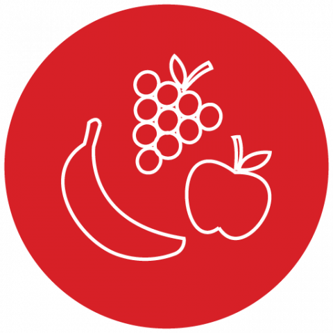

<app-navbar></app-navbar>
<div class="container">
  <div class="card shadow mt-2" [@flipAnimation]="flip ? 'flipped' : 'default'">
    <div *ngIf="!winningGif">
      <div>
        <p class=" score d-flex align-items-center justify-content-center">Score: {{score}}</p>
      </div>
      <hr>
      <div class="card-body">
        <div class="row">
          <div class="col-3 mb-2 d-flex justify-content-center" *ngFor="let fruit of fruits; let i = index">
            <div (click)="toggleImage(fruit, i)">
              
              
            </div>
          </div>
        </div>

      </div>
      <div class="d-flex justify-content-center mt-2"> <i><mark
            style="background-color: chartreuse; font-size: larger;">
            <b> Note: If you click the wrong pair, wait for 2 seconds for the next move.</b></mark></i>
      </div>
    </div>
    <div *ngIf="winningGif">
      
      <div class="restart-overlay">
        <div class="restart d-flex justify-content-center">
          <button type="button" class="btn btn-info" (click)="toRestart()">Restart</button>
        </div>
      </div>
    </div>
  </div>
</div>


